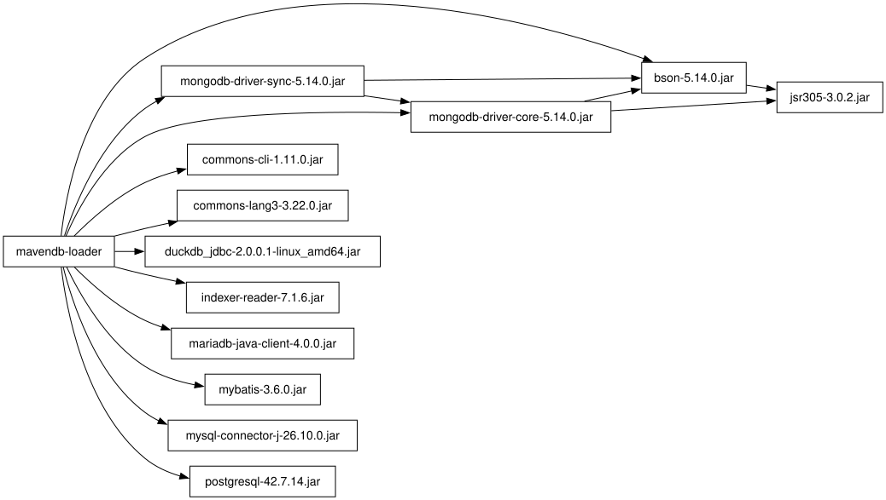
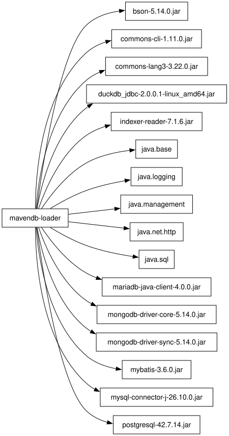

Package org.mavendb.loader
package org.mavendb.loader
Store Maven repository metadata into Database.
Jar Graph
The 3rd party jars used by mavendb-loader, and the jars they use, generated byjdeps and Graphviz in graphs.sh.

Module Graph
The 3rd party jars and JDK modules used by mavendb-loader, generated byjdeps and Graphviz in graphs.sh.

-
ClassDescriptionLocations of the application folders, resolved next to the jar file.Manages application configuration parsing and validation.Integer settings: property key, default value, and valid range [min, max].Repository for database operations with support for MySQL, MariaDB, PostgreSQL, SQLite, DuckDB, MongoDB and OpenSearch.Parameter values of one gav row: the JDBC setter calls are recorded on a conversion thread, and replayed on the writer's
PreparedStatementwith the same setter and value types.Supported target database types.Entrance of the application.Command line options.Scan all artifacts in maven repository.One converted batch, ready to write: documents for MongoDB, prepared rows for SQLite and DuckDB, encoded bytes (the payload) for the others: COPY data for PostgreSQL, MySQL and MariaDB, a bulk body for OpenSearch.One raw index record with its sequence number.Minimal OpenSearch REST client for the bulk load, on the JDKHttpClient: no client library needed.Machine readable summary of one execution, written aslog/<timestamp>-<dbtype>.jsonnext to the text log of the same run.Version string analysis result.